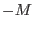
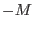

The task convolves a specified column of a fits file by a user-specified convolving function. This can be used to smooth the values in the column. Specifically, for input vector  defined from to
defined from to  and convolver
and convolver  defined from  to
defined from  to  , colsmooth
performs the following transformation:
, colsmooth
performs the following transformation:
where
and the weight term is given by
These formulae automatically normalise the convolver  . If this is not desired (indicated by setting the parameter normalise to `no'), the
. If this is not desired (indicated by setting the parameter normalise to `no'), the  values are multiplied by
in addition to the above.
values are multiplied by
in addition to the above.
The user may also specify an uncertainty column. The values of this column, which we denote by , are transformed as follows:
The vector  here represents the transformed uncertainty values. The quantity
here represents the transformed uncertainty values. The quantity  is given by
is given by
and is as given above. The  values can be `unnormalised' in the same way as
values can be `unnormalised' in the same way as  above.
above.
It is probably as well to remind users that the benefits of smoothing are almost entirely cosmetic. The fundamental amount of information in the column cannot of course be increased by such processing. In fact use of a low-pass filter may be deceptive: the amount of noise may not have decreased very much although the graph looks much better because of the suppression of the more visible high-frequency end of the noise spectrum.
This task is not XMM-specific.